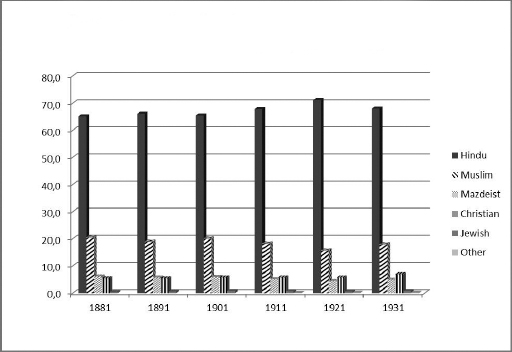
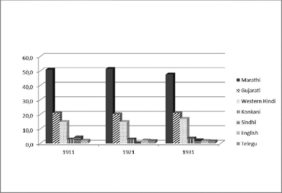
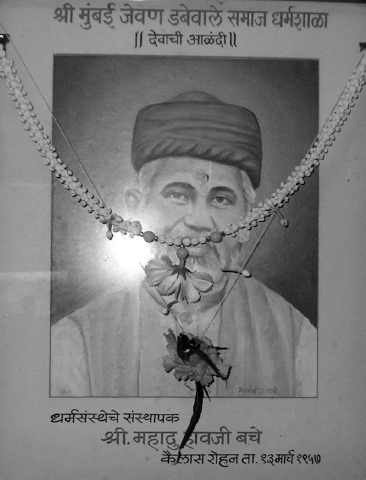
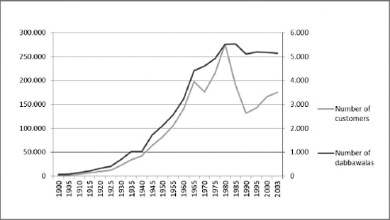

1. Bombay-Mumbai and the Dabbawalas: Origin and Development of a Parallel Economy
DOI: 10.11647/OBP.0031.01
Midday in Mumbai: teeming traffic besieges the city, lines of cars creep forward at a snail’s pace, people walk in the road, buses swerve into their bays for a split second, rickshaws and taxis veer into every tiny space, while placid cows browse amongst all kinds of garbage. Hooting horns and chaos. Lunchtime is coming up for most civil servants, office workers, and school children. Nearly two hundred thousand people are waiting for their dabbawalas, who arrive promptly with the tiffins they have to deliver.2 Dabbas make a long trip every day to reach the people expecting them: a journey through the winding streets of this metropolis, with its twenty million or so inhabitants, and a solid history that goes back almost one hundred and thirty years.3
Origins of an alliance
The history of the dabbawalas runs parallel to that of Bombay itself. The archipelago that developed into the modern metropolis of Bombay became a centre of international trade during British rule.4 The city was given to Charles II by the Portuguese as part of the dowry for his marriage to Catherine of Braganza in 1661. In 1668, the city was leased by the Crown to the English East India Company (operating at that time out of the port of Surat in present-day Gujarat) for ten gold sovereigns. It was not until about 1780 that Bombay began to exceed the importance of Surat, India’s leading trading port. Thanks to exports of raw cotton and opium to China, what had appeared as a dreary fishing town—where the British had not expected to survive for more than two monsoons—became the second most important city of the colonial Empire.
The 1861 American Civil War gave further stimulus to Bombay’s development as the British textile industry moved its bases to India and used the city as a production and export centre. The metropolis experienced startling economic growth and attracted significant amounts of capital for the creation of new investment and employment opportunities. The most evident aspect of this change, a trait of Bombay still seen today, was a migrant workforce arriving from outlying rural areas in search of employment. The gradual extension of roads and railways (the first railway line from Bombay to Thana was opened in 1853) made it easier for increasing numbers of people to travel all over India. The end of the American Civil War and the ensuing crash of cotton prices were the first stumbling block in the city’s industrial expansion. But when the Suez Canal opened in 1869, it reduced the distance to London by approximately three-quarters, and cotton exports became one of the major contributors to the colonial economy. Bombay, a point where the land meets the seas, was christened urbs prima in Indis by the British and grew into a commercial hub for the whole of India.
The transformation from a fishing village to an important industrial city was partly the product of Bombay’s connection to the British Empire. It actually became common to think of the city as the main driver of westernisation for the Indian subcontinent, although it was equally true that the centripetal forces moulding its commercial and industrial development were not just underpinned by western modernising forces. The Indian commodity market was linked to broader production and trade relations with the hinterland and with foreign markets (for instance trade in sugar, indigo and opium),5 and its cotton mills relied on increased production and domestic market penetration. By 1920 Bombay held two fifths of India’s total foreign trade, seventy per cent of coastal trade, and the majority of exports to the Persian Gulf and ports of East Africa. The city slowly evolved into a business hub, simultaneously turning into a political, administrative and educational centre where the arrival of new money created opportunities. It therefore attracted increasing numbers of migrants from all over India and the old continent, leading to the development of new forms of cohabitation and social organisation.6
A city of migrants
Bombay’s remarkable development was reflected in the evolution of its social and demographic profile. In 1661, the population was estimated at about 10,000; by 1872 it had risen to 644,405; by 1941 it was at 1,489,883.7 A series of events were decisive for this population growth which included opium trade with China; the outbreak of the American Civil War; the expansion of the textile industry and the end of World War I.8 Of course, there were also times when this steady flow of people dropped, in particular at the time of the 1918 famine and influenza epidemic, but it never stopped completely. If a city’s vitality can also be seen in its ability to attract, then Bombay has certainly never ceased to be the destination for the dreams of millions of people. This progressive demographic increase became a growth pattern characteristic of the city, a model that formed an urban cultural landscape with a policy of being open to migrants from different contexts, welcoming and integrating faiths, languages, and ethnic groups.

Figure 1. Percentage distribution of Bombay population classified by religion, 1881–1931.9
As is evident from the table above, in the years 1881 to 1931 the city was open to all types of worship but had a Hindu majority accounting for about two thirds of the resident population. Although not specified here, the category ‘Hindu’ embraces sister faiths like Jainism, Buddhism and Sikhism. Other religious groups were more or less minorities. The Parsees, for example, accounted for about five per cent of the population, but the role they played in trade and in business afforded them significant economic and political influence, despite their small number.
The Parsees originated in Persia and were descendants of the last Zoroastrians, migrating to India in the sixth century and settling in present-day Gujarat to escape religious persecution by the Muslims. Attipat Krishnaswami Ramanujan tells the story that, when the Parsees arrived in Gujurat, the region’s ruler opposed their presence and sent them a diplomat holding a symbolic message: a glass filled to the brim with milk, indicating that the container could hold no more. The Parsees then sent the monarch back his full glass of milk in which a spoonful of sugar had been dissolved, expressing their intention to mingle with the native population as sugar does with milk: sweetly and taking up no space. The ruler was pleasantly surprised by this gesture and welcomed them.10 In the mid-1600s the Parsees moved from Surat to Bombay because the British Governor, Gerald Aungier, offered favourable conditions to those who wanted to come to the city.11 One of the main requirements for settling in Bombay was that they agreed not to preach their religion, a pact still respected by the descendants of the ancient Mazdeists.
The most important religious community after the Hindus was that of the Muslims, who made up about one fifth of the population. What the numbers do not reveal is that the Muslims (like the Parsees and Hindus) were and remain a heterogeneous group. Socially they are a stratified population of various sects: Shiites, Sunnis and Ismailis of the most diverse denominations. In Bombay there were two main groups: the Khoja and the Bhora.
The Khoja were a caste of traders established in the fourteenth century by a follower of the Agha Khan, spiritual leader of the Ismailis sect. The term Khoja is the Indianised version of the Persian word Khwajah, meaning “respectable, rich person, wealthy merchant”. Traditionally engaged in commercial activities, the Khojas are converted Hindus, who keep accounts in Hindi, and follow Hindu customs. In 1847, the Bombay High Court actually ordered that the Muslim law of succession was not to be applied to their communities. So, for instance, women are excluded from the right to inherit property. Moreover, the rules applied to marriage, divorce, birth and funeral rites are different, merging Muslim and Hindu practices.12
The Bhora, also known as “Bohara” or “Vohra”, whose name derives from the Gujarati vohorvu or vyavahar, from the verb “to trade”, are Shiite descendants of Hindus who had converted to Islam. The earliest communities can be traced back to Gujarat in the eleventh century and fall mainly into three distinct groups: Ismaili, Jafara, and Dawoodi. While the Ismailis swore loyalty to the Da’i Mutlaq in Yemen, the Jafara adopted Sunni Hanafi beliefs; after the schism, the Bhora Ismailis were heavily persecuted by local rulers. The Dawoodi, considered the best organised of the three groups, were the last to be formed by the two Da’i (the foremost being Tahir Sayf al-Din) and contributed to the shaping of the current community. The members of the Bombay Bhora community are chiefly small-scale itinerant vendors of bric-à-brac and trinkets or meat. Some became particularly wealthy by trading with China. As a consequence of this new-found wealth, some descendants of these families have had access to higher education, become judges or doctors, and are esteemed professionals in the city.13
Lastly, there are small communities of Christians and Jews who have distinguished themselves in the same way as the Parsees through the important role they have acquired in public and business life. Bombay’s Jewish community is currently found mainly in Thane and it falls into three key groups: the Bene Israel (meaning “Children of Israel”), who are the most numerous and consider themselves the descendants of the first Jews who arrived in India about 2,000 years ago; the Malabar or Sephardic Jews, also still called “black Jews”, whose ancestors came to India from Eastern Europe, Spain and Holland about 1,000 years ago, settling in Cochin; finally there are the Iraqi Jews, called the “Baghdadi”, who arrived in the late eighteenth century from Iraq, Syria and Iran, fleeing political and religious persecution; they expanded the trade network by setting up economic contacts with Singapore, Hong Kong, Kobe, Aleppo and Baghdad. The Bene Israel group is the biggest of the three Bombay groups and it built the first synagogue, Shaare Rahamim, in 1796. The community acquired particular prestige during the British Raj, when it emerged by developing its businesses and working for the British military corps. While maintaining eating (kosher food), religious (observation of the Sabbath) and hygiene (circumcision) practices typical of their faith, the Indian Jewish community has assimilated local customs and practices like language (predominantly Marathi and English) and the social caste divisions.14
The Christian-Catholic community has been present since the settlement of the first Portuguese in the seven-island archipelago, founded by the Franciscan friars who arrived on the ships coming from Europe. Historical evidence suggests that they landed as early as the first century AD, with St Thomas Apostle, who began his preaching from the southern coastal areas. The Syro-Malabaric church is one of Kerala’s main Christian denominations and bases its liturgy on the Thomayude Margam (the law of Thomas). In the early period, Bombay Catholics soon built churches and monasteries, converting the local Koli tribes of fishermen.15
When the city was ceded to the British, missionary work was continued through the Church of Goa. The historical vagaries of this order are long and complex, and it is sufficient to remember that in 1720, members of the Goan clergy were expelled from the city for political reasons and the Vicar of Great Mughal (formerly Vicar of Deccan) was invited to protect the Catholic community with the Vatican’s approval. Despite this, the Goan clergy always tried to recover its position within city government and in 1764 it established a “double jurisdiction” which took the name of the Vicariate of Bombay. Mumbai’s Catholic community has numerous schools and non-profit charitable institutions that offer assistance to children, lone women and other vulnerable people. Its ethnic composition is quite varied because it includes Keralite, Goan, and Konkani Catholics (to mention just the areas of origin where the Catholic religion has its most massive presence), but also converted Kolis. Bandra is one of the areas with the largest concentration of Catholics in Mumbai, although they live all over the city.16 Protestant history differs somewhat, because missionary activity was promoted by early settlers: to a lesser extent in the south by the Danish and Dutch; more intensely in the northeast and centre of India by British missionaries.17 In Mumbai there are many Protestant churches, especially in the central part of the city, in the Malabar Hill district.
Like the Parsees, these small communities of Christians and Jews play the role of “middleman minorities”.18 This term refers to those ethnic groups—often immigrants or those arriving in the wake of diaspora dispersions—that occupy an intermediate position within the social structure, which allows them to play a role of economic intermediation between social entities separated by relatively strict status demarcations. It is no coincidence that in history the middleman minorities emerged mainly within strongly segmented feudal societies (like Jews in Medieval Europe or Armenians in the Ottoman Empire) or those based on castes (for instance Parsees in India). These minorities also succeeded in societies characterised by stable regimes in which the dominant class was separated from the subjugated class (as in colonial societies like the Chinese in the East Indies), or those marked by enduring implicit statutes of subordination, as was the post-colonial case. These societies typically have strong socio-economic polarisation linked to labour market segmentation and to cultural barriers that discriminate against particular members of society for ethnicity, age, religion, etc.
Although middleman minorities are considered by the ruling classes as “foreigners who cannot be integrated”—and have often internalised their own “otherness”—they differ from other ethnic minority groups because of their role as providers of financial and business services. They enjoy a status midway between that of a ruling class and a subordinate class. Acting as mediators between producers and consumers, employers and workers, owners and renters, the elite and the masses, they bridge the status gap between the dominant and the dominated. However, the social buffer role played by middleman minorities is conditioned by the fact that they are still socially and symbolically vulnerable. This allows the elite to channel the resentment and hostility of subordinate classes in their direction during periods of heightened social conflict. In turn, this not only reinforces the ethno-religious and linguistic-cultural self-referencing (real or perceived) of these middleman minorities, but also their dependence on the stability of the predominant social structure.
Initially, this “tendency to self-reference” was traced back by Edna Bonacich to a cultural orientation and social planning typical of the sojourner (in other words the diaspora migrant, the temporary resident, perpetually seeking a future return to the homeland left or lost). Several scholars of migrations now attribute it to the complex dynamics of interaction that middleman minorities develop with both the ruling and subordinate classes, especially during or as a result of social conflict. The precariousness of their social status often leads these groups to prefer self-employment and work involving business and finance, which ensure strong capital liquidity and mobility. There is also a preference for building communities that to the outsider may appear to have a strong internal solidarity and capacity to resist assimilation. The cohesion of these communities may also be strengthened through endogamic marriage strategies, policies and practices for safeguarding distinctive cultural traits, as well as forms of residential, community and other sorts of segregation.
Mumbai’s cultural and social ethnic stratification is reflected not only in the diversity of religions practiced in the city, but the multitude of languages spoken.

Figure 2. Percentage distribution of population classified by language spoken, Bombay, 1911–1931.19
Although half of the inhabitants speak Marathi, no ethnic group is linguistically dominant in social and business interaction. The constant arrival of new migrants increased linguistic complexity and led to the evolution of a lingua franca or creole known as Bombay or Bambaiya Hindi. Although this vernacular constantly changes, it is still spoken because of its use in 1950s and 1960s Bollywood films.20
Bollywood is the quintessential form of Indian film-making not only due to the large number of films made each year in Bombay, but because Bombay film companies release their films in Hindustani (a pluricentric language made up of Urdu and Hindi). Hindustani is not restricted to a particular area: it is spoken across India alongside other local dialects and was the vehicle that carried Bombay-made films across the nation. Although the arrival of sound forced production companies to make films in the different languages spoken on the Indian subcontinent, with Hindustani it was possible to reach a wide and varied audience. Bombay’s human, cultural, and linguistic diversity made it a driver of initiatives for evolving a method of communication accessible to all its inhabitants.
Understanding that Bombay was—and still is—a city of immigrants is crucial to interpreting its cultural and social stratification. Most people who came to seek employment in the city maintain a close bond with their place of origin. Work in the city has typically been irregular and employment conditions often precarious, so ties with the rural homeland are common, serving as a safety net in the event of unemployment. The bonds maintained with these rural areas were a transitional stage in the formation of the urban labour force in the early period of Bombay’s industrialisation, but were also a basic risk management strategy. Research undertaken in 1970 indicates that there was a steady integration process for migrant labour reaching the city, so this is a constant of Bombay life given that the active population is still composed mainly of migrants.21 The city’s unique urban format is underpinned by the fact that the work situation in Bombay is precarious and erratic, and that the labouring classes maintain ties with their place of origin. These villages are both a stable source of recruitment for cheap labour and a kind of outlet valve for excess labour in times of crisis. Many urban workers regularly send home money or goods, thus holding onto the status and rights acknowledged for their position in the family.
These migrants support themselves and their families by working as “coolies” in offices and homes.22 At the time of the consolidation of the British Empire, the term “coolie” was used by the British to identify low-skilled employees, often bound by multi-year contracts for forced wage labour (indentured workers) in the colonies. The term was soon adopted by all European powers engaged in colonial expansion. In 1833, the British Empire abolished the slave trade, before abolishing slavery in its colonies in 1874; from then on, Indian and later Chinese coolies became the equivalent of African slaves for European industrial imperialism. They were essential for the development and commercial exploitation of the colonies. The term coolie indicated an unqualified, waged, unskilled worker and could also be used to some extent to describe a cotton mill worker, although this group usually retained links with farm work in their villages. So, despite having moved their permanent residence to Bombay, they acquired a different social status.
Clearly the term “model” applied to Bombay cannot be taken in its usual meaning of a “grid” required to explain a particular circumstance, as this would attribute an unrealistic uniformity to the Bombay migratory trend. Emphasis should fall on the huge differences from one region to another, and even amongst the individual villages of origin, the prevailing climate, nature and conditions of work. Whatever their origin or reason for leaving their home, almost every migrant in India preserved ties to their village and caste. The interaction between those rural bonds and the city’s economic structure has fostered the development of a unique Bombay culture founded on practices, languages and expressions rooted in ethnic, class and caste origins, and a process of constant transformation.
From the legend
This ever-shifting social and economic landscape was the destination of Havji Madhu Bacche, a young man from the Marathi-speaking district of Pune.23 Towards the end of the 1880s, an anonymous Parsee banker employed Bacche to go to his home in Grant Road, collect his tiffin and deliver it to his office on Ballard Pier. The young man was one of the many Maratha workers in topi caps who could—and still can—be seen at any crossroads, waiting to be hired for all sorts of work. This was the beginning of a legend:24 the creation of a food distribution system that has progressively increased its catchment area. Raghunath Medge, president of the dabbawala association Nutan Mumbai Tiffin Box Suppliers Charity Trust (NMTBSCT) tells this story:
Certainly Bacche’s vision was crucial in establishing the regular group of workers, because he soon realised that his capacity to increase this delivery service relied on his ability to find people who could carry heavy wooden dabba trays. What seemed like typical “coolie” work soon took on a different connotation to straightforward delivery work, thanks to the formation of an association governed by a set of internal rules and with a solid reputation for reliability. Bacche’s son describes his father’s personality and professional ethics, and how he founded the dabbawala association:
Bacche acknowledged that one of the most important and most immediate strategic issues was to identify the resources for implementing the delivery service in the best way. In order to manage a group organically, he needed to know the people, speak the same language, and share the same relational code; hence recruiting his fellow villagers seemed the fastest and most logical method.26 To this day, the dabbawalas continue to arrive from the same rural area in the Pune district, about three hours from Mumbai by train. The area includes small villages like Audar and towns like Rajgurunagar. It is a chiefly agricultural region and the uncertainty of work in the fields continues to drive people to go and seek paid employment in Mumbai. These migrants were (and are still) largely illiterate and therefore destined to expand the ranks of Mumbai’s unqualified labour, so a chance to deliver tiffins was considered more desirable than agricultural work.
Bacche’s chief merit was his creation of an organised working group, which then served as the foundation for the NMTBSCT. The sheer simplicity of the idea—a service for transporting food prepared at home by the family to a customer’s place of work—underlies an entrepreneurial strategy based on the ability to exploit the interaction with Mumbai’s complex ethnic and social configuration. The success of the NMTBSCT is based on developing trust between the dabbawala and the customer, on the ability of the work group to deliver lunch on time, on the excellent reputation for reliability and punctuality and, finally, on the organisation’s ability to interact with the city’s cultural fabric. Direct testimonies of customers of the past are not available, but a reconstruction of their profile indicates the precious climate of trust in which the dabbawala once worked, and still does. Bacche’s son, who is also an NMTBSCT dabbawala and a retired NMTBSCT director, describes how the meal delivery system began:

Figure 3. Picture of Madhu Havji Bacche. By kind permission of Raghunath Medge.
The first customers for the dabbawalas arrived in the late nineteenth century and were largely members of the British and Indian elite. There were few European women in the British community able to cook western meals, and homes often had several chefs who cooked western and Asian-style food.27 The British adapted to food in India in increments: there was a first phase during which Indian food was appreciated by British travellers, but was slowly replaced by a mixed cuisine with its own recipes, called Anglo-Indian food.28 This cuisine is also the result of several cross-cultural marriages between Europeans and Indians. The term “Anglo-Indian” initially referred to British residents in India but was later used to denote the offspring of mixed marriages where there was usually a European father and an Indian mother. The difficulty in adapting to local eating habits encouraged Europeans to use the services of some Parsee kitchens on those occasions when they could not eat at home, and they would request for meals to be cooked in a way resembling the recipes of their homeland.29 In addition, Bombay’s poor hygiene conditions and chronic lack of drinking water made it even more difficult to adapt to the city’s cuisine.
The Parsee community had an important role as culinary middlemen between the British colonial class and the city’s immigrant populations.30 As is typical with middleman minorities, especially those who have been persecuted in the past, many Parsees became bankers, merchants or doctors. Industrial and social change in Bombay provides ample proof that Parsee and British cultures harmonised, not least of all because the Parsees adopted English as their preferred means of communication.31 To understand the importance that the Parsees acquired in the business field, it is useful to remember that they were the only non-Europeans to be shareholders in the Bank of Bombay, the Bank of Bengal and the Bank of Western India.32
The less evident side of this preferential relationship between European and Indian society (although it is the most important for this study) was the creation of kitchens, generally managed by Parsee women. These women used their husbands’ networks of acquaintances to provide lunches for Bombay’s upper middle classes and elite. What made Zoroastrian cuisine a major medium of cultural exchange was its extreme adaptability to Hindu influences. Parsee cuisine actually has few dietary restrictions and reflects both its Persian heritage with its strong non-vegetarian component, and the adaptation of this cuisine to the dietary habits acquired during the initial settlement in Gujarat, a region that is prevalently vegetarian.33 This positive fusion was particularly suited to the taste of the Europeans and Indians living in Bombay.34 In the early twentieth century, the city was the common denominator in the different lifestyles that periodically came together.35 It progressively revealed itself to be a place where every language in the world was spoken and where everything was eaten, with a healthy appetite. Medge describes Bombay’s culinary cultural fusion:
Unfortunately, there is not a great deal of literature on the evolution of Parsee cuisine precisely because this invisible daily art was performed by women, and the recipes were handed down orally, from mother to daughter.36 Nevertheless, it would be wrong to think that in the organisation of Bombay’s food practices the role of women did not act as the focal point for a wider overview of food.37
… and the cotton mill-workers
The profound urban changes in Bombay also led to an increasing demand for the dabbawala service. Merchants selling products like diamonds, gold and clothing became an important part of the association’s clientele. However, it was Bombay’s skilled cotton workers who used the meal delivery system the most. From the construction of the first mills in the mid-1800s to their closure in 1980, Bombay-Mumbai bore witness to the changes brought about by the growth, expansion and decline of cotton manufacturing. The mill-workers made up a complex ethnic group, comprising mainly men arriving in the city from outlying villages in search of work. Through family, caste and shared geographical origin, they found employment as factory workers and supported the family back in the village.38
More often than not, these workers’ private lives were spent in small, crowded rooms in a building where they slept, called a chawl; meals were taken in small eating places called khanawals. These places were run by widows or women who had to support their families when their husbands were unemployed, and offered a dignified alternative to prostitution. Bombay’s female workforce was, for the most part, not involved in factory work. The city was primarily home to male immigrants: in 1864 there were about 539 women for every thousand men, and the ratio was virtually the same in 1921 (about 525 per thousand).39 This gap between women and men was closely connected to the migration model prevalent in Bombay: the precariousness of working conditions forced men to leave their families back in the village, returning periodically to work in the fields or when they lost their city jobs. It was only with the expansion of the cotton industry after 1880 that the demand for female labour grew substantially, but subsequent enforcement of maternity laws and limited working hours for women and children meant that female recruitment once again decreased.40 This gradual detachment from the industrial world relegated women to occupations in domestic services, catering, small-scale sales or prostitution. It was mainly widows who fell prey to the latter, as they were victims of a strong social stigma and often had no access to other sources of livelihood.41 Female unemployment was also the expression of asymmetrical gender relations in India. For this reason, these small eateries were very important for women, giving them the opportunity to secure a livelihood and avoid destitution.42
The administrator of the Annapurna Mahila Mandal, an association for battered women, describes exactly how the catering service has been a source of redemption:
The association is still present in Mumbai and has expanded its range of action, building refuges for jobless women in different parts of the city. The administrator of Annapurna Mahila Mandal, explains that it is also connected to dabbawala work because customers often use dabbawalas to transport food cooked by Annapurna:
In the past, the food brought from the khanawals was based on very simple regional recipes and sold at extremely low prices. “Eating out” was not a special event for workers but a choice dictated by daily survival: houses were small and crowded and cooking was almost impossible.44 Only the middle class could afford to eat at home and share the meal with their families, while the working classes used the khanawals. These places became real centres for socialisation, where it was possible to get together and talk, and where people could order tiffins to take to work. Dabbawalas followed the schedule of the cotton mills, delivering tiffins for each of the three factory shifts: from eight in the morning to two in the afternoon; from two to eight in the evening; and at night, from eight to one in the morning. There were about twenty dabbawalas working in Girgaon, Mumbai’s industrial district, and each dabbawala managed forty customers.45
Interviews reveal the intense relationships that the dabbawalas built up with the millworkers. Medge observes:
A member of the association also remembers:
From the early 1900s until its slow decline at the end of the century, Bombay’s economy was closely bound to the cotton industry. With the gradual shutdown of its main manufacturing companies, Bombay began its transformation process from a colonial industrial city to a metropolis where social and political dynamics began to play out after India’s independence in 1947. Cotton mill profits were invested in the growth of an industry aimed at emancipating India from its ties with the United Kingdom and there was an attempt at a self-governing policy privileging the growth of the petrochemical, engineering and food industries. Growth lasted until the 1970s and brought with it increased employment in the city.46 The changes also reflect in the history of mills that had shown a fairly balanced product quality profile until the 1950s.
Nonetheless, the city’s post-1947 reconfiguration shows how the textile industry was forced to convert to fit into an economic system no longer bound by its (asymmetric) relations with British industry. Cotton mill production began to differentiate and work was decentralised outside of Bombay, with a progressive loss of bargaining power for the primarily Marathi-speaking workers. Product differentiation brought a demand for an unskilled workforce that was easily intimidated, which allowed for a maximisation of profits but at the expense of the safety, job stability and wage levels of the workers. This phase culminated with the great general strike of 1982–1983, when more than 250,000 workers gathered in the streets of Bombay.47 The strike failed in its aim because mill owners used it as a pretext to close down unproductive sites, increasing the price of cotton clothing. The closure of the cotton industries also altered urban morphology, emptying the centre (which is geographically southernmost) of production facilities that were moved out into suburbs like Thane and Navi Mumbai.
The strike, which paralysed the cotton mills for almost eighteen months, had a significant impact on city life and on the work of the dabbawalas, since their main client base was forced to return to the villages after becoming unemployed. In Bombay’s golden age of manufacturing, white-collar workers were apparently not the dabbawalas’ main customer as they are today. An interesting degree dissertation on civil servants, for example, makes no mention of the use of a tiffin service as a preferred way of consuming the midday meal at work.48 The NMTBSCT’s secretary, Gangaram Talekar, explains the city’s economic transformation and the consequent change of dabbawala clientele like this:
… and the Mumbai middle classes
During the progressive decline of the textile district, other multinationals like Hindustan Unilever Limited (HUL) and Bata set up business in Bombay, facilitating the transition from an industrial to a service economy. In the last two decades of the twentieth century, Bombay recovered its role as a global city thanks to a number of key contemporary phenomena: the end of the bipolar geopolitical order; the emergence of new global governance frameworks; and the kind of social and cultural phenomena that are considered typical of the postmodern condition. The city assumed a central role in the distribution of capital and information flows, and as a production platform for products and innovations in a post-industrial service industry economy.
The expansion of an economy linked to the service sector promoted the growth of new social classes, including a Marathi-speaking middle class, which became crucial for Mumbai’s future.49 Following the reorganisation of Indian states according to their linguistic identity in 1960, the state of Maharashtra was created by dividing the territory of the Bombay Presidency (which at the time included Gujarat). This was also the period when the Shiv Sena movement became established in Bombay, later evolving into a Hindu populist and nativist party. The Shiv Sena party suggested a programme of positive discrimination on an ethnic basis, seeking a voice for Marathi-speaking people. Although traditionally relegated to the lower rungs of the social ladder and jobs without status, the Marathas are demographically the largest ethnicity. They now began to demand a more important role in decision-making processes concerning municipal policies. The expression of this demand for economic and social representation evolved alongside the disappearance of classic forms of work organisation. There was above all an identity-type resistance, a possible vehicle of new forms of democracy but also of xenophobic outbreaks and religious fundamentalism.
In the mid-1990s, Bombay became Mumbai. The Shiv Sena party running the state of Maharashtra at the time proposed changing the city’s name in line with a nation-wide process of altering names that were considered to be an expression of British influence. Mumbai derives from the name of the goddess Mumba, the divinity who is the patron of the Koli fishing tribe that originally inhabited the archipelago where the city developed.50 This is how Medge describes it:
The change of name was popular with the Marathi-speaking people because it was already used in both Marathi and Gujarati, while those who spoke Hindi usually called the city Bambai. In this sense, the official name change emphasised the transition process from a colonial to an indigenous slant. Then, on 4 March 1996, the name of one of the most archetypal buildings of British Bombay was also changed when Victoria Railway Station became the Chattrapati Shivaji Terminus.51
The overwhelming reaction of the citizens to the city’s change of name, was that they did not see this step as the semantic appropriation of a primary identity, but as the loss of what has been defined as Bombay’s “proper name”, the expression and metaphor of the diversity of India, the image of hope and modernity.52 Here the lesson of historian Eric Hobsbawm comes to mind, suggesting that the invention of tradition was a strategy for the assertion of functional identity to achieve political ends particularly suited to the nationalist ideology.53 Asserting the continuity of a suitably selected historical past allows practices of a ritual or symbol to be established in order to consolidate a social unit and corroborate its primal authenticity.54 This was the meaning attributed to the change of name for many Indian cities: the desire to revive a primitive, “traditional”, authentic, native vision of the place. This quest for authenticity actually achieves a converse effect of quite stale artificiality because, as Hobsbawm writes, “Where the old ways are still alive, traditions need neither be revived nor invented”.55 The name Bombay was an expression of the colonial era, but not an emblem of colonialism. It symbolised a multi-ethnic creole cosmopolitanism, and here was an attempt to replace it with an identity of definite religious and ethnic connotation.
In the 1990s, Mumbai aligned with large global megalopolises, increasing the relevance of the tertiary sector, in particular financial services (the city is the home of the stock exchange), communications, IT, banking and the Bollywood film industry. The city was therefore driven to produce and market goods and services aimed at maintaining a lifestyle appropriate to a society in which a highly-developed tertiary sector plays an increasingly important role.56 Despite everything, Mumbai continued to be distinctive for its huge variety of languages, religions, caste hierarchies, domestic rituals, festivities, forms of prayer and ways of dressing and cooking. All these aspects coexist in close proximity: sometimes they overlap; sometimes they are quite separate.57
It is precisely an attention to diversity that characterises Mumbaikar awareness, although cohabitation does require a continuous process of accommodation that is not always peaceful.58 Mumbai culture does not appear to be the exclusive domain of a community, or a particular economic activity. The common denominator in this complex coexistence of overlapping hierarchies is a migrant identity: almost all Mumbaikars are immigrants or descend from immigrants. In the city there is a conviction that no one will be denied their chance of social mobility and self-realisation, a conviction that acts as a sort of horizontal organisation factor to alleviate the pressure to move up and advance in society. Moreover, the city continues to welcome and “handle” newcomers: small traders from South India; dairymen and farmers from Uttar Pradesh and Bihar; Hindu and Muslim taxi drivers; Goa Christian middlemen; wealthy Sindhi merchants from Karachi; and so on.59
The city’s economic and social transformations have not decreased the dabbawala workload. The system has been able to adapt to the changes dictated by the constant flow of people who decide to live in the city for varying lengths of time, and proves that this delivery network can adapt perfectly to every new customer. According to one NMTBSCT dabbawala:
As this eyewitness says, the changes to Mumbai’s economic and industrial structure have altered the dabbawalas’ customer profile and number to some extent. The data below show that despite the changes, there has been a constant increase in customers, dropping slightly only in the period that included the 1980s strike and Bombay’s progressive social and economic reconfiguration.

Figure 4. Dabbawalas and their custumers, 1900–2003.60
The data does not present an exact profile of the people using the dabbawala service today, but it does show that one of the main user bases is essentially that part of the Indian middle class with a fixed salary.
It is no easy task to define the Indian middle class, which is a highly diverse social group. The Indian National Council of Applied Economic Research defines as “middle class” those who earn between US $4,000 and $21,000 a year, but these parameters can actually only be applied to six per cent of India’s population. The economic proportion was then adjusted using a parameter of daily earnings that considered $5–$10 a day to be a middle-class income.61 A recent study conducted by CNN-IBN and the Hindustan Times, on the other hand, suggests adopting a criterion based simply on the consumer profile, monitoring the ownership of possessions like cell phones, colour televisions and motor vehicles. This definition covers about twenty per cent of the Indian population. The difficulty in finding an exhaustive definition for the parameters of the middle class has led some scholars to wonder about the legitimacy of applying a typically western label to Indian society’s intermediate income ranges. The concept of “middle class” is not merely statistical; it also embraces complex aspects like lifestyle, self-image, consumption profile, aspirations, etc. It might be more practical, as Rachel Dwyer says, to accept that the Indian middle class is very different from its western equivalent, since it includes civil servants, teachers, doctors, lawyers, white-collar workers, businessmen, but also film stars and military personnel.62
Some of these categories are upper-middle class, others are lower-middle, and they can be found in big cities that include Bombay and Calcutta as well as in smaller industrial and commercial towns.63 The disparity between the large cosmopolitan cities and the rest of rural India shows how economic parameters are often inadequate for defining the identity of this slice of the population: what is needed for survival in a Bombay slum might offer a far more comfortable lifestyle in another location.64 These inconsistencies are frequently perceived as a symptom of the social contradictions that undermine modern India and in part this can be seen in a dual definition of the middle class—traditional and modern, representing two distinct, complementary styles.65 The traditional middle class can be traced back to the modernising drive promoted by Nehru after independence; it takes its cue from the old British elite’s preferences and tends to ensure a certain continuity with the pre-independence administrative and linguistic model. The modern middle class, conversely, is attuned to what occurs in the planet’s global metropoles, has a post-cosmopolitan colonial vision, and seeks the expression of a new Indian nationalism with a lifestyle moulded by specific consumer profiles.
This distinction is particularly important for research into the Mumbai meal delivery system. Although there is a huge amount of food available in the city, it is not considered like any other merchandise. If it were, customers would not use the dabba service: they would buy lunch anywhere. The decision to eat home-cooked food represents the continuity of a certain idea of tradition, suggesting that nourishment is actually what Arjun Appadurai calls “a powerful semiotic device”, with tangible and intangible forms that are able to convey relationships with production and exchange.66 The tiffin service means being able to eat home-cooked food at work and this simple act placates the city, reaffirming the specificities of each community within its boundaries.67 On one hand material goods are expressed in a western, commercial language, while on the other, moral goods continue to speak the language of ethnic, caste and ritual purity traditions that cannot be understood if they are isolated from the person’s cultural beliefs.
A small component of India’s disparate middle-class population is represented by the businessmen who move frequently from one Indian city to another and also travel to major western capitals. These businessmen promote a new eating style hallmarked by the presence of foods with regional, caste and community influences typical of an ethnic origin, but revealing the influence of international western or Asian-style cuisine. Their wives do not necessarily have a link to their regional past, so they copy recipes from cookbooks written in English by Indians no longer living in India.68 This category does not make frequent use of the dabbawalas, but does seem to embody a food style that is helpful in understanding part of the Mumbai population.
Today, the new horizon for the delivery service includes school children, staff in large shopping malls, new tertiary sector professionals and all those who want to eat home-cooked food with guaranteed hygiene standards in an increasingly polluted city.69 Medge explains:
A job handed down from one generation to the next
As lifestyles come and go, tiffin delivery appears to be an element of continuity throughout Mumbai’s food history. This continuity is the expression of the respect the dabbawala nurtures for the customer. The dabbawala-customer rapport is based on the understanding that good service guarantees survival for the worker and his family back in the village. As a result, the customers come to be seen as divinities because their patronage allows the service to thrive and continue. Medge puts it like this:
The most striking aspect of the framework Medge describes is the relationship of trust that has characterised the customer- dabbawala relationship over all these years, often lasting from one generation to the next. The work of delivering meals has its roots in a lengthy history of families serving one another, handing down the keys of the relationship to the next generation. Medge’s story is typical, as he inherited first his father’s job, then his position as president:
The continuity of the dabbawala-customer relationship over time does not depend only on the dabbawala: it also involves those customers who choose to use the tiffin delivery service that is a family tradition. Entire generations have eaten thanks to dabbawalas and have thus granted the service the characteristics of a rite of passage for entering a food system that is the expression of Bombay-Mumbai culture.71 Being familiar with the delivery service means recognising the customs that regulate Mumbai’s food supply and, in the words of Michael Herzfeld, acquiring “cultural intimacy” with an extended community, distinguishing the specific aspects that define shared sociability.72
The arrangement takes advantage of the convergence and correlation of different elements that Tullio Seppilli says can be defined in five main points:
The dabbawalas are consequently an expression of the Mumbai food system because in their context they bind together products, people, institutions and eating patterns through a network of relationships that merge into a recurring cycle. Awareness of being in this cycle, which returns regularly over the generations, gives the dabbawalas the self-assurance to manage their work. Lunch will always be a fundamental part of every working day, and this awareness allows the dabbawalas to see their future in positive terms. Talekar has this to say:
History itself is seen to be the dabbawala’s most loyal ally. People remember and recognise the dabbawala’s reputation to the point of authorising them to deliver their personal effects.74 In more than a century of constant ferrying of food across Bombay, the faces of thousands of people who have used this system as a privileged eating system can be discerned. In the words of one NMTBSCT dabbawala:
The distribution system also has sustainability characteristics not only in how it preserves the underpinning of a given society, but also for its interesting employment potential, offering opportunities to the poor and the illiterate. The dabbawala’s job is recognised as socially indispensable and requires significant skill in balancing food containers while travelling around the city at high speed on all kinds of transport. Besides the distribution system’s very low costs and minimal environmental impact, it also gives some meaning to the lives of those who make it possible and it is perceived as a real “profession” that is handed down from one generation to the next.
A short Story: A Dabbawala Family
My father became a dabbawala twenty-five years ago; he is seventy now and he was born in a Konkan village called Raigar. He came to Bombay a few years after he married and when he was living here, he took another wife, so this was his second marriage. He has two daughters from his first wife and he has two sons and two daughters from his second wife. I am the oldest son and then there is my younger brother. He works with diamonds, he is a diamond quality controller. The office is near to our customers, where we deliver tiffins. My father came to Bombay on his own and he met my mother here. She also works as a dabbawala, her name is Lakshmibai, and we work together but her job is not so heavy: she doesn’t carry such heavy weights as we do. I’ve been doing this job for four years. First I studied up to year twelve in Dadar, near Siddhi Vinayak Mandir. Then I did odd jobs… in Domino’s Pizza and some electrician work, fixing cables. Then I decided to be a dabbawala: I decided I wanted to deliver tiffin. Now I’m thirty-eight, I live in Malad—Malad West—and I have a daughter. My mum helps look after our little girl when she finishes delivering tiffins, because my wife works. I like working here, I like it a lot. There is no stress. As long as you do your job, when you’ve finished you can go home. There is no pressure on dabbawalas. You do your job, you do it properly, deliver all the tiffins on time, that’s the job.
Footnotes
1 Salman Rushdie, Imaginary Homelands: Essays and Criticism 1981–1991 (New York: Viking, 1991), p. 10.
2 The term “tiffin” refers to a light meal popular during the British Raj. The word first made its appearance in the early 1800s and derives from the English verb “to tiff”, referring to the consumption of a midday meal, and “tiffing”, a slang term meaning the consumption of food and drink between meals. It survives in Mumbai’s daily vocabulary to indicate a meal eaten away from home, as well as being used by the dabbawalas as a synonym for dabba. For further information, consult K. T. Achaya, Indian Food: A Historical Companion (New Delhi: Oxford University Press, 1994).
3 Dabba means “box” in Hindi. In this case it means a special container, made of steel and consisting of three separate sections that assemble into a cylinder about eight inches high, used specifically for taking lunch to work. The noun dabbawala, formed by the noun dabba and the suffix wala—which turns the word into a compound noun—means “he who carries dabba”.
4 The city was named following the 1534 landing of Portuguese conquerors in the archipelago of seven islands known as Heptanesia (Greek for a “cluster of seven islands”) in the Bronze Age. The islands of Bombay, Colaba, Mazagaon, Little Colaba, Mahim, Parel and Worli were called “Bom Bahia”, the “welcoming port”, by the Portuguese. When the city became part of British Crown possessions its name changed from “Bombaim” (the crasis of Bom Bahia) to Bombay.
5 Giorgio Borsa, La nascita del mondo moderno in Asia orientale. La penetrazione europea e la crisi delle società tradizionali in India, Cina e Giappone (Milan: Rizzoli, 1977). Kirti Narayan Chaudhuri wrote that “The colonial impact on Asia was not confined just to diverting the flow of trade in a longitudinal direction from the previous latitudinal flow; it reoriented Asian intellectual thought in a similar direction as well”. See Kirti Narayan Chaudhuri, Asia before Europe: Economy and Civilisation of the Indian Ocean from the Rise of Islam to 1750 (Cambridge: Cambridge University Press, 1991), p. 11.
6 Rajnarayan Chandavarkar, The Origins of Industrial Capitalism in India: Business Strategies and the Working Classes in Bombay, 1900–1940 (Cambridge: Cambridge University Press, 1994); Gillian Tindall, City of Gold: The Biography of Bombay (New Delhi: Penguin, 1982).
7 Chandavarkar (1994), p. 30.
8 Mainly thanks to the significant fortunes of the large Jamsetjee Jeejeebhoy Parsi and Sons mercantile agency, the leading exporter to China of opium produced in Malwa, Gujarat; see Peter Ward Fay, The Opium War 1840–1842 (Chapel Hill: University of North Carolina Press, 1975).
9 Source: Rajnarayan Chandavarkar, The Origins of Industrial Capitalism in India: Business Strategies and the Working Classes in Bombay, 1900–1940 (Cambridge: Cambridge University Press, 1994), p. 31.
10 Attipat Krishnaswami Ramanujan, “Food for Thought: Toward an Anthology of Food Images”, in The Eternal Food: Gastronomic Ideas and Experiences of Hindus and Buddhists, ed. by Ravindra S. Khare (Albany: State University of New York Press, 1992), pp. 221–50 (p. 238).
11 The complex history of the Parsees very briefly outlined here can be explored fully by reading Eckehard Kulke, The Parsees in India: a Minority as an Agent of Social Change (New Delhi: Vikas, 1978), or the excellent two-volume work by Dosabhai Framji Karaka, History of Parsees; Including their Manners, Customs, Religion and Present Position (London: Macmillan, 1884). John Armstrong defines Parsee migration as an archetypal diaspora, because the Parsees have succeeded in safeguarding the bonds with their ancient myths and their distinctive alphabet. See John Armstrong, “Archetypal Diasporas”, in Ethnicity, ed. by John Hutchinson and Anthony D. Smith (Oxford: Oxford University Press, 1996), pp. 120–26.
12 Reginald E. Enthoven, “Kojah”, in The Tribes and Castes of Bombay, ed. by Reginal E. Enthoven, 3 vols. (Bombay: Government Central Press, 1921), vol. 2, pp. 218–30.
13 Asaf A. A. Fyzee, “Bohoras”, in Encyclopaedia of Islam, 12 vols. (Leiden: E. J. Brill, 1960–2005), vol. 1, pp. 1254–55.
14 See Nathan Katz, Who Are the Jews of India? (Berkeley: University of California Press, 2000).
15 The term koli actually means “spider” and in Marathi “the weaver of a web”, a meaning derived from the work performed by this tribe. See Vinaja B. Punekar, The Son Kolis of Bombay (Bombay: Popular Book Depot, 1959), p. 5; Kavita Rane, An Observational Study of Communication Skills Involving Fish Retailers in Mumbai (unpublished MA thesis, University of Mumbai, 2005); and Sanjay Ranade, “The Kolis of Mumbai at Crossroads: Religion, Business and Urbanisation in Cosmopolitan Bombay Today”, paper presented at the 17th Biennial Conference of the Asian Studies Association of Australia, Monash University, Melbourne, 1–3 July 2008, available at http://artsonline.monash.edu.au/mai/files/2012/07/sanjayranade.pdf [accessed 20 July 2012].
16 Sebastian Irudaya Rajan, Catholics in Bombay: A Historical-Demographic Study of the Roman Catholic Population in the Archdiocese of Bombay (Shillong: Vendrame Institute, 1993); and Felix Alfred Plattner, Christian India (London: Thames and Hudson, 1957).
17 Antonio Armellini, L’elefante ha messo le ali. L’India del XXI secolo (Milan: Egea, 2008), p. 151.
18 The “middleman minority” theory was developed in the United States by scholars of immigrant socioeconomic integration strategies, in particular Edna Bonacich, “A Theory of Middlemen Minorities”, American Sociological Review, 38 (1973), 583–94; and Edna Bonacich, “Middleman Minorities and Advanced Capitalism”, Ethnic Groups, 2 (1980), 311–20; see also Walter Zenner, “Middleman Minority Theories: A Critical Review”, in Sourcebook on the New Immigration, ed. by Roy S. Bryce-Laporte, Delores M. Mortimer and Stephen Robert Couch (New Brunswick, NJ: Transaction Books, 1980), pp. 413–25. There should be an element of caution with regard to the original middleman theory. This “classic” view of middleman minorities tends to attribute a concrete nature to “cultural” elements of circumstances and provisional condition, like the sojourner status that is often the outcome of explicit exclusion policies or non-recognition of resident status/citizenship. The intention was useful but insufficient and not appropriate for grasping the complexity of the dynamics that today characterise the realities of minority immigrant entrepreneurs in the societies they enter. See also Ivan Light and Edna Bonacich, Immigrant Entrepreneurs: Koreans in Los Angeles, 1965–1982 (Berkeley: University of California Press, 1988).
19 Data: Rajnarayan Chandavarkar, The Origins of Industrial Capitalism in India: Business Strategies and the Working Classes in Bombay, 1900–1940 (Cambridge: Cambridge University Press, 1994), p. 33.
20 For further information on Indian films, see Elena Aime, Breve storia del cinema indiano (Turin: Lindau, 2005), p. 83.
21 Kunniparampil Curien Zachariah, Migrants in Greater Bombay (London: Asia Publishing House, 1968).
22 The etymology of the English word “coolie” is uncertain. The most likely derivation is from the Hindi/Urdu word qūlī (a labourer) or the Tamil kuli (a wage), but some think that it comes from the Turkish word kuli (a slave). One last theory is that it originates from the name of an aboriginal Gujarat tribe, the Kulī or Kholi, subdued and forced into menial jobs by the British after the foundation of their commercial ports in Surat and Bombay. See Rana Partap Behal and Marcel Van Der Linden (eds.), Coolies, Capital, and Colonialism: Studies in Indian Labour History (Cambridge: Cambridge University Press, 2006); Daniele Cologna, Cina a Milano (Milan: Abitare Segesta, 2000); and Yann Moulier Boutang, De l’Esclavage au salariat: Economie historique du salariat bridé (Paris: Presses Universitaires de France, 1998). See also Marina Carter and Khal Torabully, Coolitude: An Anthology of the Indian Labour Diaspora (London: Anthem Press, 2002). The word “coolie” is still used to mean those workers who perform heavy duties, like porters who carry luggage at train stations.
23 There are few relevant bibliographic sources and in most cases they refer to various interviews given by the president of NMTBSCT, Raghunath Medge. A number of researchers look at the figure of Bacche: C. S. Parekh, The Dabbawallas of Mumbai (unpublished PhD thesis, Narsee Monjee College of Commerce and Economics, Mumbai, 2005); Ramasastry Chandrasekhar, Dabbawallahs of Mumbai, Richard Ivey School of Business, University of Western Ontario, 2004, available at http://beedie.sfu.ca/files/PDF/mba-new-student-portal/2011/MBA/Dabbawallahs_of_Mumbai_(A).pdf [accessed 28 October 2012]; and a manuscript I was given by Medge, written by an anonymous author, with the title: A Visionary Who Created History Through the Dabbawallas.
24 Giulio Sapelli points out that if “the person in question has died, only entelechiale traces remain, which is to say the ‘footprint’ left by their work. This trace is the course of Jungian individuation, the gradual emerging of the ‘silhouette’ of an intention and a representation that is increasingly precise and clear”. See Giulio Sapelli, “Mitobiografia per le scienze sociali”, in Giannino Bassetti: L’imprenditore raccontato, ed. by Roberta Garruccio and Germano Maifreda (Soveria Mannelli: Rubbettino, 2004), p. 261.
25 Testimonies are unanimous in affirming that the association started up in 1890, but also that the dabbawala service already existed in Bombay in a non-organised form. The date must therefore be considered as the moment in which Bacche began this type of work, not as the moment the service was invented.
26 The lack of direct testimonies makes it impossible to express considerations on the premeditated nature of this decision. The sociology of migrations and ethnic business studies suggests, however, that compatriot ties are often a very valuable ethnic resource for anyone setting up a business. See, for instance, Light and Bonacich (1988); and Alejandro Portes (ed.), The Economic Sociology of Immigration: Essays on Networks, Ethnicity, and Entrepreneurs (New York: Russell Sage Foundation, 1995).
27 See Tindall (1982).
28 For more information on Anglo-Indian cuisine and accounts by British travellers on their relationship with Asian food, see Achaya (1994); and Patricia Brown, Anglo-Indian Food and Customs (New Delhi: Penguin, 1998).
29 This information comes from various conversations with Raghunath Medge.
30 See Kulke (1978).
31 Ibid.
32 Borsa (1977), p. 139. For a more recent historical reconstruction, see Michelguglielmo Torri, Storia dell’India (Bari: Laterza, 2000).
33 The teachings of Mahavira, the master who founded the Jain religion in the sixth century BC, and of other Jain scholars of the eleventh and twelfth centuries generated a huge following for vegetarianism in Gujurat. Their doctrine was reinforced by the disciples of Vishnu with similar principles. About 70% of the Gujarat population today is thought to be vegetarian. See K. T. Achaya, “In India: civiltà pre-ariana e ariana” in Storia e geografia dell’alimentazione, ed. by Massimo Montanari and Françoise Sabban, 2 vols. (Turin: Utet, 2006), pp. 144-52.
34 Many other types of cuisine developed following European colonisation of India and the coming together of all these cultures. For instance, Goan cuisine from Portuguese colonisation; Pondicherry cuisine from French influence; and Keralite cuisine from a widespread Catholic influence.
35 The reference to the “common denominator” is from Mark-Anthony Falzon, Cosmopolitan Connections: The Sindhi Diaspora, 1860–2000 (New Delhi: Oxford University Press, 2005), p. 101. The author defines Bombay as playing a connective role in the melting pot concept, which arose and evolved mainly in the United States.
36 For an explanation of many Parsee recipes, see Niloufer Ichaporia King, My Bombay Kitchen: Traditional and Modern Parsi Home Cooking (Berkeley: University of California Press, 2007). Parsee food traditions are also explained in Bhicoo J. Manekshaw, Parsi Food and Customs (New Delhi: Penguin, 1996).
37 Historian Caroline Walker Bynum has already highlighted the close relationship between women and food, especially in European medieval religious history. Widening the field of inquiry it can be seen that men may be involved in the production of food but it is usually women who convert the food into meals and women who control the household. The scholar’s considerations can be applied appropriately to other contexts. See Caroline Walker Bynum, Holy Feast and Holy Fast: The Religious Significance of Food to Medieval Women (Berkeley: University of California Press, 1987). For a study of the relationship between women and food in more recent times, see Maria Guiseppina Muzzarelli and Fiorenza Tarozzi, Donne e cibo. Una relazione nella storia (Milan: Bruno Mondadori, 2003).
38 See Chandavarkar (1994); Meena Menon and Neera Adarkar, One Hundred Years One Hundred Voices: The Millworkers of Girangaon: An Oral History (New Delhi: Seagull Books, 2004); Jan Breman, Of Peasants, Migrants and Paupers: Rural Labour Circulation and Capitalist Production in West Bengal (Oxford: Oxford University Press, 1985); and Jan Breman, Labour Migration and Rural Transformation in Colonial Asia (Amsterdam: Free University Press, 1990).
39 Chandavarkar (1994), p. 94.
40 J. C. Kydd, “The First Indian Factories Act (Act XV of 1881)”, The Calcutta Review, 293 (1918), 279–92; and Alexander Robert Burnett-Hurst, Labour and Housing in Bombay: A study in the Economic Condition of the Wage-earning Classes of Bombay (London: King & Son, 1925).
41 Deepa Mehta’s film Water (2005) describes the condition of widows in traditional Indian society. Much has been written on the status of widows in India and it is worth remembering that until a few years ago, and this is still so in some parts of India, widowed women were blamed for not safeguarding the life of their husband, either through neglect or through bad karma. A widow with no adult sons was the living example of the precarious inequality between men and women. The position changed with the presence of a son, which allowed the woman to be considered the honoured mistress of the house. See David Smith, Hinduism and Modernity (Oxford: Blackwell, 2003).
42 For a history of women in the cotton mills, see Menon and Adarkar (2004). For more on khanawals, I recommend Dina Abbott, “Women’s Home-Based Income-Generation as a Strategy towards Poverty Survival: Dynamics of the ‘Khanawalli’ (Mealmaking) Activity of Bombay” (unpublished PhD thesis, The Open University, 1994).
43 In Hindu mythology Annapurna is the goddess of food and nourishment. She is also considered the goddess of prosperity and abundance. In Sanskrit anna means “grains” and “food” but also “body/physical/shell”, and purna means “full”, “complete”, “perfect”. Annapurna gives food and she is also the goddess of the harvest, the protector of the fields so she is worshipped in order to have a good harvest. She is the goddess of the kitchen and she gives to the poor. She is the generous one (puma). Traditionally she is depicted with a container of food in one hand and in the other a spoon that she holds out to the faithful. She also feeds her husband, Shiva, putting food in the human skull he uses as a bowl. As goddess of food she also transforms food into energy. The food she gives to Shiva actually gives him the energy (shakti) for achieving his wisdom and enlightenment. In the same way that Annapurna symbolises the divine aspect of nourishment, through food the cook not only feeds the body but also provides the energy for those who eat to follow their own destiny. If the food is prepared following a sacred ritual, an outright alchemy is created. For this reason, images of Annapurna are found in kitchens, next to canteen tables and in restaurants.
44 Frank F. Conlon, “Dining Out in Bombay/Mumbai: An Exploration of an Indian City’s Public Culture”, in Urban Studies, ed. by Sujata Patel and Kushal Deb (New Delhi: Oxford University Press, 2006), pp. 390–413.
45 This data was provided by Raghunath Medge.
46 Sujata Patel and Jim Masselos (eds.), Bombay and Mumbai: The City in Transition (New Delhi: Oxford University Press, 2003).
47 See Herbert W. M. Van Wersch, The Bombay Textile Strike, 1982–1983 (New Delhi: Oxford University Press, 1992).
48 R. N. Bhonsle, Clerks in the City of Bombay (unpublished MA thesis, University of Bombay, 1938).
49 See Patel and Masselos (2003).
50 Recent studies of the Koli goddesses of Mumbai have shown that the religious beliefs and practices of this community have changed since the late nineteenth century. Vicziany and Bapat suggested that Mumbadevi has been increasingly marginalized by the Kolis and has become absorbed into the practices of the Marathi and Gujarati communities of Mumbai. See Marika Vicziany and Jayant Bapat, “Mumbadevi and the Other Mother Goddess in Mumbai”, Modern Asian Studies, 43 (2009), 511–41, DOI: 10.1017/S0026749X0700340X
51 The importance of the figure of the leader Shivaji in the city of Bombay and state of Maharashtra will be discussed in Chapter Two. “Shiv Sena”, Shiva’s Army (the reference is to Shivaji), has turned this historical figure into the cornerstone of nativist ideology (based on the concept of bhumiputra, “son of the soil”), which claims greater collective rights for the Maratha than those currently afforded to this population. The party reveals a strong Hindutva (Hindu fundamentalist and anti-Muslim) inspiration.
52 Thomas Blom Hansen, Wages of Violence: Naming and Identity in Postcolonial Bombay (Princeton: Princeton University Press, 2001).
53 See also Benedict Anderson, Imagined Communities: Reflections on the Origin and Spread of Nationalism, rev. edn. (London: Verso, 1991).
54 Eric Hobsbawm and Terence Ranger (eds.), The Invention of Tradition (Cambridge: Cambridge University Press, 1983), p. 8.
55 Ibid., p. 10.
56 See Patel and Masselos (2003).
57 Sujata Patel and Alice Thoner (eds.), Bombay: Mosaic of Modern Culture (New Delhi: Oxford University Press, 1995), p. xiii.
58 Ibid. The violent clashes between Hindus and Muslims in 1992 to 1993 are a case in point, showing a progressive intolerance towards “foreigners”.
59 Ibid., p. xix.
60 Data: Chandrasekhar, Ramasastry, Dabbawallahs of Mumbai, Richard Ivey School of Business, University of Western Ontario, 2004, available at http://beedie.sfu.ca/files/PDF/mba-new-student-portal/2011/MBA/Dabbawallahs_of_Mumbai_(A).pdf [accessed 28 October 2012], p. 17.
61 Chakravarthi Ram-Prasad, “India’s Middle Class Failure”, Prospect, 30 September 2007.
62 Rachel Dwyer and Christopher Pinney, Pleasure and the Nation: The History, Politics and Consumption of Public Culture in India (New Delhi: Oxford University Press, 2001).
63 For an overview of the Indian middle class, see Pavan K. Varma, The Great Indian Middle Class (New Delhi: Penguin, 1998); Ruchira Ganguly-Scrase and Timothy J. Scrase, Globalisation and the Middle Classes in India: The Social and Cultural Impact of Neoliberal Reforms (London: Routledge, 2008); and Christoph Jaffrelot and Peter van der Veer, Patterns of Middle Class Consumption in India and China (New Delhi: Sage, 2008).
64 See William Mazzarella, “Middle Class”, in the online encyclopaedia South Asia Keywords, ed. by Rachel Dwyer (2005), available at http://www.soas.ac.uk/southasianstudies/keywords [accessed 26 June 2012].
65 Ibid., p. 5.
66 Arjun Appadurai, “Gastro-Politics in Hindu South Asia”, American Ethnologist, 8 (1981), 494–511.
67 Madhugiri Saroja A. Rao, “Conservation and Change in Food Habits Among Migrants in India: A Study in Gastro-dynamics”, in Aspects in South Asian Food System: Food, Society and Culture, ed. by Ravindra S. Khare and Madhugiri Saroja A. Rao (Durham, NC: Carolina Academic Press, 1985), pp. 121–40.
68 Arjun Appadurai, “How to Make a National Cuisine: Cookbooks in Contemporary India”, Comparative Studies in Society and History, 30 (1988), 3–24.
69 There is no classification of new customers being served by the dabbawalas. My information is based on data acquired during field interviews. The schematic description applied should not, however, be seen as a definite demarcation of customer profiles and the timeframe included is simply to assist understanding.
70 In India the term “organic food” refers to products grown without the use of pesticides or chemical fertilisers, and inspired by the organic agriculture and animal liberation movements.
71 Arnold Van Gennep, Les Rites de Passage (Paris: Picard, 1909). The author says that communitas, the rite of eating and drinking together, is a rite of aggregation, of union.
72 Michael Herzfeld, Cultural Intimacy: Social Poetics in the Nation-State (New York: Routledge, 1997).
73 I use the eating system definition found in Tullio Seppilli, “Per un’antropologia dell’alimentazione. Determinazioni, funzioni e significati psico-culturali della risposta sociale a un bisogno biologico”, La ricerca folklorica, 30 (October 1994), 8–9.
74 Roberta Garruccio writes: “Reputation and trust are parallel aspects and that is precisely what makes the individual’s reputation important for the group”. See Roberta Garruccio, Minoranze in affari. La formazione di un banchiere: Otto Joel (Soveria Mannelli: Rubbettino, 2002), p. 39.